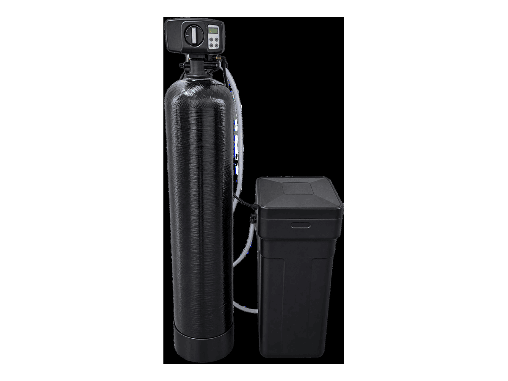

Adoucissement
AdoucissementRP-U18
Adoucisseur d'eau compact sous-évier
SKU: RP-U18
MOQ : à confirmer lors de la demande
Accueil/Produits/Adoucissement de l'eau/ RP-W01

Adoucissement de l'eau
Série d’adoucisseurs d’eau à réservoir séparé (分体软水机-32w) — un aspect, trois capacités : 32,000 / 48,000 / 64,000 grains.
RP-W01, RP-W02 et RP-W03 partagent un aspect à réservoir séparé et ne diffèrent que par la capacité. Spécification clé : Capacité d’échange 32,000 / 48,000 / 64,000 grains. Les spécifications sont confirmées par modèle et commande.
Série d’adoucisseurs d’eau à réservoir séparé, 32,000 / 48,000 / 64,000 grains. La photo montre la série d’adoucisseurs à réservoir séparé ; la taille varie selon le modèle.
Même aspect, trois capacités — coter aussi commeRP-W02 (48,000 grains)ouRP-W03 (64,000 grains).
La tension / fréquence est configurable selon le pays de destination. Les autres configurations sont confirmées par commande.
RP-W01 est une série d’adoucisseurs d’eau à réservoir séparé qui partage un aspect sur trois capacités : 32,000, 48,000 et 64,000 grains. Les trois modèles ne diffèrent que par la capacité — volume de résine de 28 L, 45 L et 60 L, avec des dimensions de 278 × 240 × 1265 mm, 292 × 268 × 1569 mm et 317 × 317 × 1518 mm. Une marque peut proposer les trois capacités avec un seul aspect, et coter RP-W01, RP-W02 ou RP-W03 pour les modèles de 32,000, 48,000 et 64,000 grains.
Quelle est la quantité minimale de commande ?
La première commande est de 200 unités par modèle, et les réassorts sont de 500 unités.
Puis-je commander un échantillon avant une commande en volume ?
Oui. Les échantillons sont prêts en 15 jours, et les frais d'échantillon sont remboursés sur votre première commande en gros. Les commandes en gros prennent 40 jours après approbation de l'échantillon et sont expédiées FOB Shenzhen.
Quelle capacité dois-je choisir ?
Coter RP-W01 pour 32,000 grains (28 L de résine, 278 × 240 × 1265 mm), RP-W02 pour 48,000 grains (45 L de résine, 292 × 268 × 1569 mm) ou RP-W03 pour 64,000 grains (60 L de résine, 317 × 317 × 1518 mm).
Survolez l'image d'une variante pour voir ses spécifications. Sur écran tactile, touchez une image.


Comparaison des trois modèles de la série — même aspect, capacité différente.
| Spécification | RP-W01-1 — 32,000 grains (分体软水机-32w) | RP-W01-2 — 48,000 grains (分体软水机-48w) | RP-W01-3 — 64,000 grains (分体软水机-64w) |
|---|---|---|---|
| Capacité d'échange | 32,000 grains | 48,000 grains | 64,000 grains |
| Volume de résine | 28 L | 45 L | 60 L |
| Dimensions (W × D × H) | 278 × 240 × 1265 mm | 292 × 268 × 1569 mm | 317 × 317 × 1518 mm |
Les trois modèles : adoucisseur d’eau à réservoir séparé ; tension / fréquence configurables selon le pays de destination ; autres configurations confirmées par commande.
Les spécifications sont tirées du catalogue ROPureOEM. Lorsqu'une valeur n'est pas encore confirmée, elle est indiquée comme « Confirmé par commande » — nous ne publions pas de chiffres non confirmés.
AdoucissementAdoucisseur d'eau compact sous-évier
SKU: RP-U18
MOQ : à confirmer lors de la demande